Computer Vision · Final Project (CIS 515)
ASU's Pitchforks dining hall spends 6–8 hours a day manually counting inventory. A YOLOv8 object-detection model, fine-tuned from a 428-image self-collected dataset, prototypes the core computer-vision component of an automated alternative.
00 · Problem / Opportunity
Pitchforks dining hall needs a consistent supply of perishable and packaged items to serve fresh, hygienic meals every day. Today, that supply is tracked entirely by hand.
Automating inventory tracking reduces the labor hours spent on a purely administrative task, cuts the chance of human counting error, and speeds up the restock-decision cycle. More accurate, more frequent counts mean less food waste and more consistent food quality.
Reduced manual workload frees time for higher-value work, like cleanliness and food quality, not role elimination.
Better visibility into material inflow/outflow supports ASU's sustainability and waste-reduction goals.
01 · Proposed Solution
A shelf camera captures an image; a CV model detects and counts each visible product; counts are compared against expected par levels; a dashboard alerts staff when something is running low. Only the highlighted stage is this project's technical focus. Everything else is non-CV integration work.
Why CV is essential: the core bottleneck is a human visually recognizing and counting products. A CV model performs exactly that task without a human present. No other component in the pipeline can replace that role.
02 · Data Acquisition
Direct access to Pitchforks' real warehouse inventory wasn't available within the project timeline. To still validate the full pipeline end-to-end, the team photographed 5 packaged grocery products readily on hand as a representative stand-in. Every step below (collection, annotation, training, evaluation, live testing) transfers directly to Pitchforks' real inventory by re-running the same pipeline on photos of its actual stock.
435
raw photos collected
5
product classes
428
clean images after review
7
excluded (blurry / mislabeled)
Class distribution
428 clean images across 5 products: mild imbalance (69–100 per class), revisited in Section 05
03 · Model Development: Annotation
Manually drawing 428 bounding boxes was avoided in favor of automated annotation using FastSAM (a lightweight Segment-Anything model), prompted to segment "the object at the image center." Annotation quality didn't converge in one pass. It evolved through 8 iterations as new failure modes appeared:
Combining automated segmentation, classical foreground extraction (GrabCut), and threshold recalibration with a final targeted manual review produced a clean dataset far faster than manually annotating all 435 images, while still catching pre-existing data-labeling issues no bounding-box method alone could have found.
04 · Model Development: Training
The 428 images were split 70% / 20% / 10% per class (stratified), using
n_train = ⌊0.7n⌋, n_val = ⌊0.2n⌋, n_test = n − n_train − n_val so every class keeps the same
proportion in all three sets and no image is dropped or double-counted.
298
train images
83
validation images
47
held-out test images
A YOLOv8n (nano) model, pretrained on COCO, was fine-tuned via transfer learning (θ0 = θCOCO, not random init) rather than trained from scratch. The model already knows generic visual features (edges, textures, shapes); only the product-specific final layers need real retraining, which is what makes strong results possible on under 300 training images.
YOLOv8n
3.0M params, 8.2 GFLOPs
50
epochs (CPU, 416px, batch 8)
0.85 hr
training time
3
loss components
L = λ_box·L_box(CIoU) + λ_cls·L_cls(BCE) + λ_dfl·L_dfl
Box loss (CIoU): penalizes position/size/aspect-ratio error, using IoU plus center-distance and aspect-ratio penalty terms so the gradient stays informative even before boxes overlap.
Classification loss (BCE): penalizes wrong or low-confidence class predictions.
Distribution Focal Loss: sharpens the anchor-free box-edge regression (unlike older detectors that predict offsets from a fixed set of preset anchor-box shapes, this one predicts each box's edges directly for every grid location).
Under the hood: how the network is structured
YOLOv8n is a convolutional neural network: 129 layers, ~3 million learnable
parameters. Each layer is a bank of small filters sliding over the image, each neuron computing
y = f(Σ wᵢxᵢ + b) where f is the SiLU activation. Stacked together, early layers
learn generic features (edges, textures) and deeper layers combine them into object-level concepts.
This is the same generic-to-specific progression that makes transfer learning from COCO work at all.
Under the hood: how training finds those parameters
Training is a minimization problem: find the ~3M weights θ that make the
loss L(θ) as small as possible. With millions of dimensions, solving dL/dθ = 0 directly isn't
possible. Instead, gradient descent takes small steps toward a minimum:
θ ← θ − η·∇L(θ): always moving opposite the
gradient (steepest increase), i.e. toward lower loss.
Minima, maxima, saddle points
Minimum: loss is locally lowest; this is what training seeks. Box loss went from 0.89 → 0.41 over the actual 50-epoch run (Section 05 charts).
Saddle point: a minimum along one direction, a maximum along another; common in high-dimensional loss landscapes and a place training can stall. Momentum (AdamW momentum=0.9, seen in the actual training run) helps carry the update through these.
05 · Validation
On the 47-image test split, never touched during training or for any training decision:
Precision vs. Recall, by class
top-right corner = ideal. Barilla is the only class pulled away from the cluster.
Overall (all classes)
the headline numbers
Reading these bars: mAP@0.5 asks "did the model find the object at all, with a roughly-correct box?" Every class except Barilla scores 0.995, essentially perfect. mAP@0.5:0.95 is the stricter version, averaging that same question across ten IoU thresholds from 0.5 up to 0.95, so it also grades how tightly the box fits, which is why every class's second number is lower than its first.
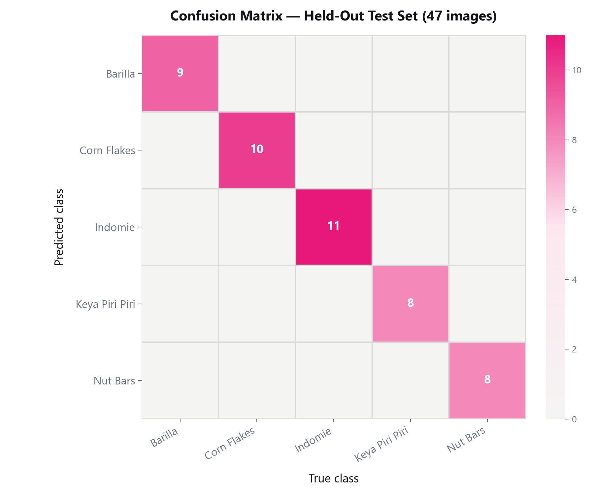
What this tells us
Every off-diagonal cell between two products is zero. The model has never once mistaken one product for another. Barilla, Corn Flakes, Indomie, Keya Piri Piri, and Nut Bars are fully visually distinct to it.
The predicted counts match the true test-set counts per class exactly (e.g. 11/11 Indomie, 10/10 Corn Flakes), so nothing is being over- or under-counted within this matrix.
Barilla's lower mAP@0.5:0.95 (Section 05) isn't cross-product confusion. The raw counts here are perfect. The gap comes from a few loosely-fit boxes and background false positives/negatives (Section 4, Barilla's known annotation issues), which this class-vs-class matrix doesn't capture.
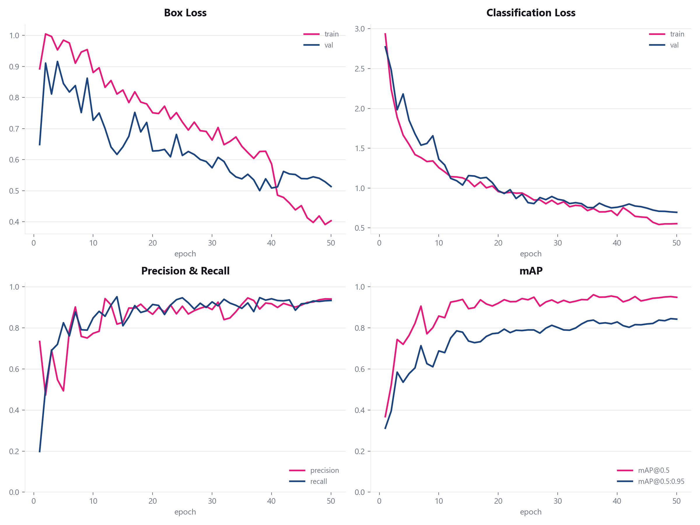
Panel layout: top row: box loss (left), classification loss (right) · bottom row: precision/recall (left), mAP@0.5 and mAP@0.5:0.95 (right).
What this tells us
Box & Classification Loss fall smoothly for both train (pink) and validation (blue) with no divergence between the two lines: a sign the model is genuinely learning the task, not just memorizing the 298 training images (which would show val loss rising while train loss keeps falling).
Precision & Recall both climb fast in the first ~15 epochs (transfer learning doing its job) then converge tightly around 0.9–0.95. The model isn't trading one off for the other.
mAP@0.5 plateaus near 0.95 by epoch 20; the stricter mAP@0.5:0.95 keeps climbing more gradually to ~0.85, consistent with box localization (how tightly boxes fit) taking longer to refine than simply finding the right object.
06 · Live Proof-of-Concept Demo
A live webcam demo runs the fine-tuned model against a real-time camera feed. This is the same end-to-end action a deployed shelf camera would perform. Single-item shots were detected reliably and with high confidence across all 5 classes: Barilla 0.97, Corn Flakes 0.95, Keya Piri Piri 0.97, Nut Bars 0.87, Indomie 0.79.
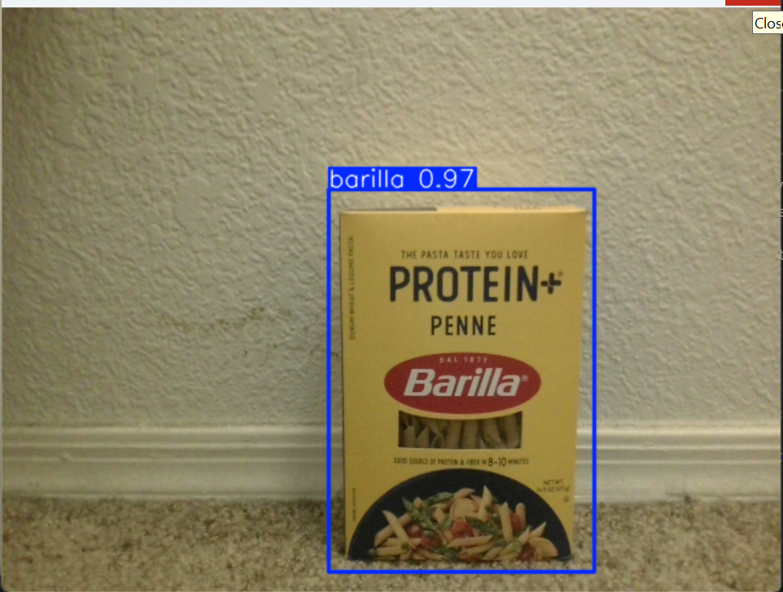
Barilla: 0.97 confidence
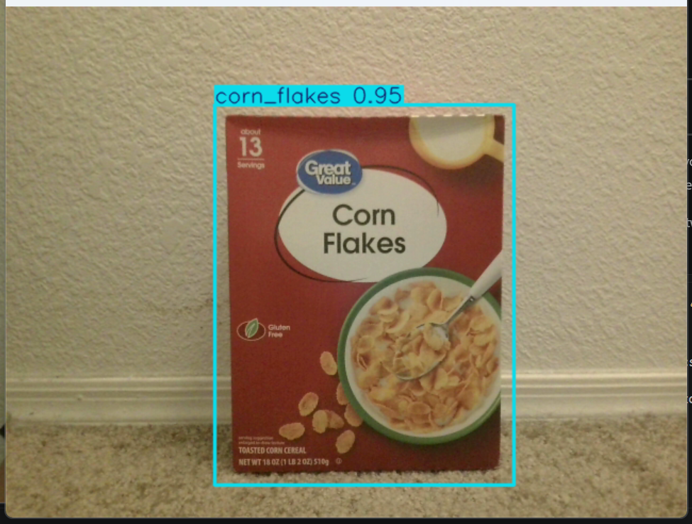
Corn Flakes: 0.95 confidence
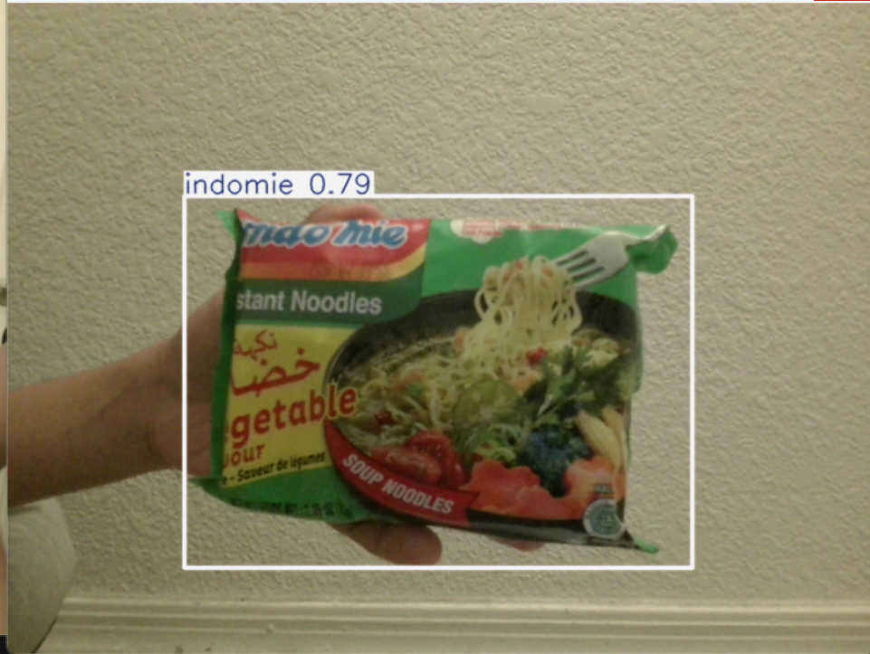
Indomie: 0.79 confidence
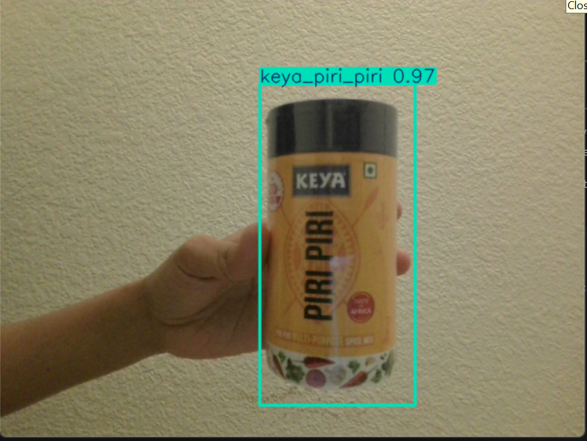
Keya Piri Piri: 0.97 confidence
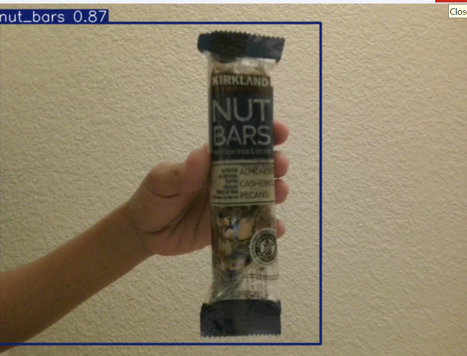
Nut Bars: 0.87 confidence
07 · Limitations & Mitigation
Every training image contained exactly one centered product, so the model was never shown two objects in one frame. Placing multiple products in the same shot exposed this directly:
Failure mode 1: items placed touching/close together get merged
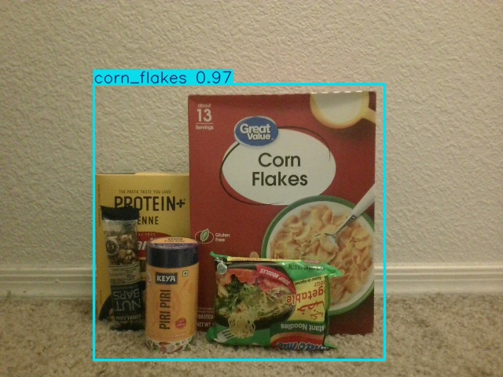
4 distinct items (Barilla, Nut Bars, Keya Piri Piri, Indomie) merged into one box, one label: "corn_flakes 0.97". The other 3 products get no detection at all.
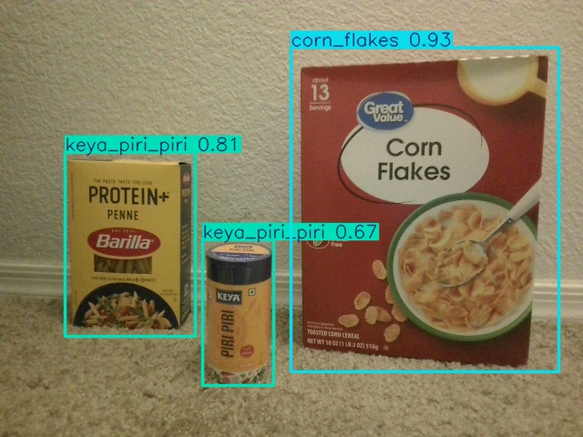
A 3-item shot (Barilla, Keya Piri Piri, Corn Flakes): here 3 boxes appear, but Barilla is misclassified as "keya_piri_piri 0.81". The model still confuses adjacent items even when it does separate them.
Rather than shooting and re-annotating new multi-object photos, synthetic multi-object training images were generated automatically from the existing single-item images and their already-known bounding boxes: crop a product using its existing box, paste it onto another training image, derive the new box purely from paste-position arithmetic: no manual re-labeling needed.
After Round 1: same item combinations, re-tested
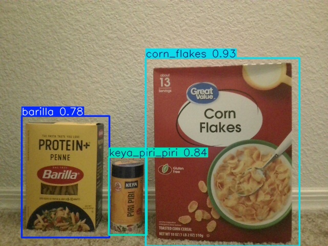
Full success: Barilla 0.78, Keya Piri Piri 0.84, Corn Flakes 0.93: all 3 correctly separated and correctly classified.
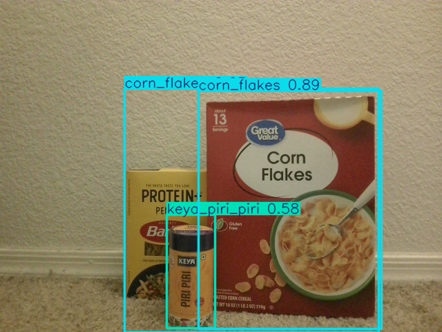
Partial success: same 3 products, different shot: now 3 boxes appear (up from 1 before Round 1), but Barilla is still mislabeled "corn_flakes". Spatial separation improved; classification confusion on Barilla did not fully resolve.
After Round 2: the regression that led to reverting it
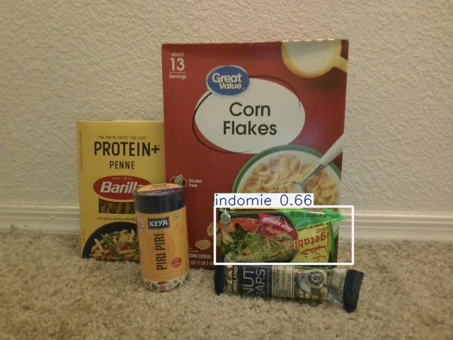
All 5 products in frame, Round 2 model: only Indomie 0.66 is reported above the 0.5 confidence cutoff. Probing down to conf=0.05 showed the model still had weak signal for the rest (corn_flakes 0.21, barilla 0.19, keya_piri_piri 0.16). The detections exist, just below a usable confidence.
Decision: the Round 1 model was kept as final. Key learning: synthetic copy-paste augmentation has a sweet spot on a small dataset: useful in moderation, but pushing it further to force a harder scenario can cost more in real-world confidence calibration than it gains. A production system needing reliable dense-cluster counting should collect a modest number of real multi-object photos instead of pushing synthetic augmentation further.
08 · Responsible Use
09 · Post-Deployment
As new products are added to the warehouse, a modest number of new photos would run through the same FastSAM auto-annotation pipeline, and the model periodically re-fine-tuned from its existing checkpoint, not retrained from scratch, so each update stays in the same under-an-hour range seen throughout this project. Per-class detection confidence is worth monitoring over time as a signal for when re-training is actually needed.
10 · References
Jocher, G., Chaurasia, A., Qiu, J.: Ultralytics YOLOv8, docs.ultralytics.com
Zhao, X. et al.: Fast Segment Anything (FastSAM), github.com/CASIA-IVA-Lab/FastSAM
Kirillov, A. et al.: Segment Anything, Meta AI Research, 2023
CIS 515 Project Proposal Guidelines and Final Project Deck and Presentation Guidelines (course materials)